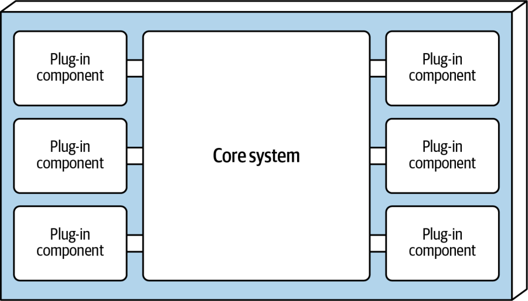
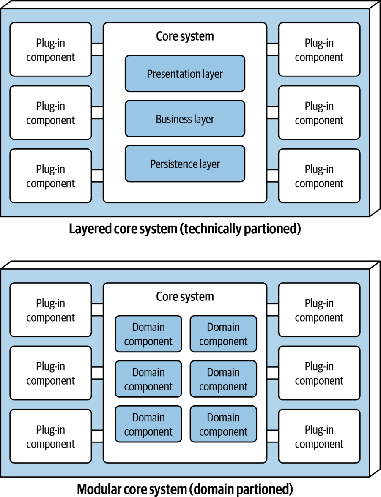
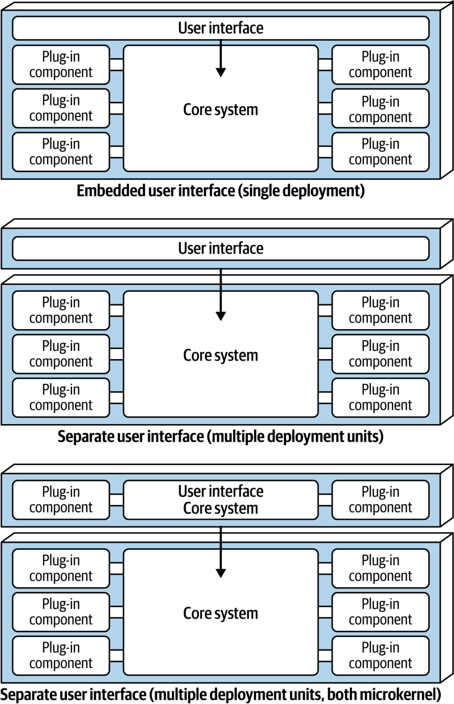
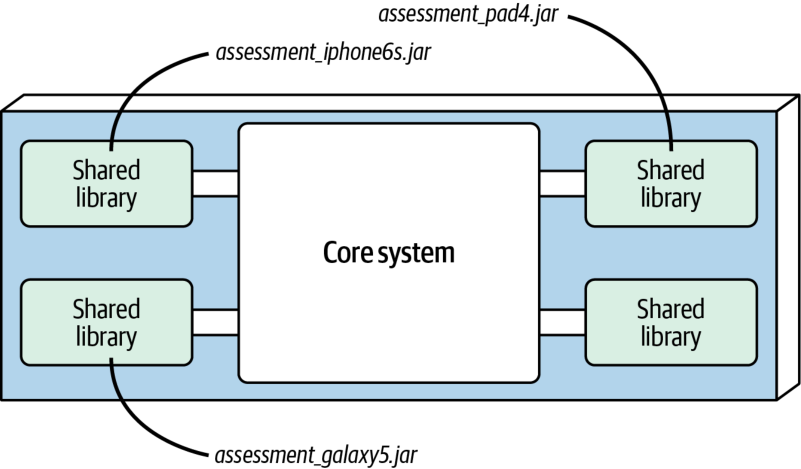
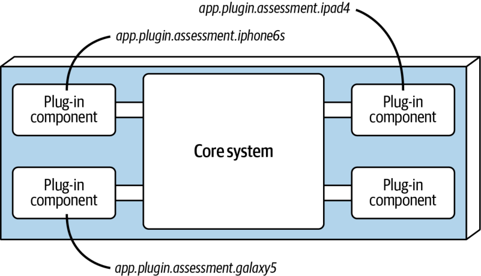
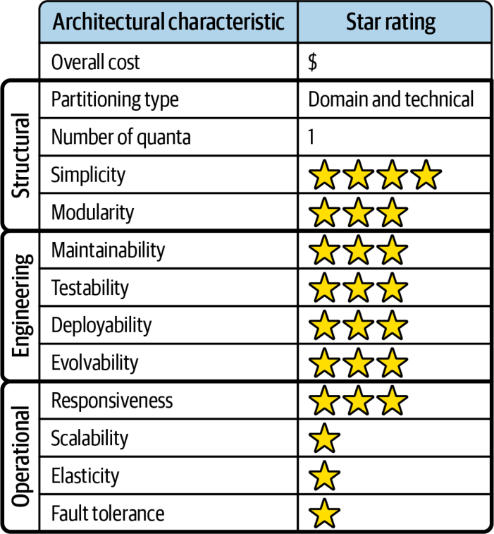

سبک معماری میکروکرنل، که معماری افزونهای نیز نامیده میشود، چند دهه پیش ابداع شد و امروز نیز بهطورِ گسترده به کار میرود. این سبک معماری برای برنامههای محصولمحور (product-based applications) انتخابی طبیعی است؛ یعنی برنامههایی که بهصورتِ یک استقرارِ واحد و تکپارچه بستهبندی و برای بارگیری و نصب عرضه میشوند و معمولاً بهعنوانِ یک محصولِ شخص ثالث در محلِ مشتری نصب میشوند. اما این سبک در برنامههای کسبوکاریِ سفارشیِ غیرمحصولی نیز بهطورِ گسترده به کار میرود، بهویژه در حوزههای مسئلهای که به سفارشیسازی نیاز دارند. برای نمونه، یک شرکتِ بیمه در ایالات متحده که برای هر ایالت قواعدِ منحصربهفردی دارد، یا یک شرکتِ حملونقلِ بینالمللی که باید از تفاوتهای حقوقی و لجستیکیِ گوناگون پیروی کند، هر دو از این سبک سود میبرند.
توپولوژی
سبک میکروکرنل معماری تکپارچهٔ نسبتاً سادهای است که از دو مؤلفه تشکیل میشود: یک سیستمِ هسته (core system) و افزونهها. منطقِ برنامه میانِ مؤلفههای افزونهٔ مستقل و سیستمِ هستهٔ پایه تقسیم میشود؛ این تقسیم قابلیتهای برنامه را از هم جدا میکند و گسترشپذیری، انطباقپذیری و منطقِ پردازشِ سفارشی را فراهم میکند. شکل ۱۳-۱ توپولوژیِ پایهٔ سبک معماری میکروکرنل را نشان میدهد.

شکل ۱۳-۱. مؤلفههای پایهٔ سبک معماری میکروکرنل
ویژگیهای خاصِ سبک
جوهرِ معماری میکروکرنل از دو نوع مؤلفه تشکیل میشود: سیستمِ هسته و افزونهها.
سیستمِ هسته
سیستمِ هسته بهطورِ رسمی بهعنوانِ کمینهٔ کارکردِ لازم برای اجرای سیستم تعریف میشود. برای نمونهای خوب از این تعریف، نگاهی به محیط توسعهٔ یکپارچهٔ (IDE) Eclipse بیندازیم. سیستمِ هستهٔ Eclipse فقط یک ویرایشگرِ متنِ ساده است: فایلی را باز کنید، متنی را تغییر دهید و فایل را ذخیره کنید. تا افزونهها را نیفزایید، Eclipse به محصولی کاربردی تبدیل نمیشود.
اما تعریفِ دیگرِ سیستمِ هسته، مسیر موفق است: یک جریانِ پردازشیِ عمومی در برنامه که پردازشِ سفارشیِ اندکی دارد یا اصلاً ندارد. معماری میکروکرنل پیچیدگی چرخهایِ برنامه را برمیدارد، آن را از سیستمِ هسته بیرون میبرد و در مؤلفههای افزونهٔ جداگانه جای میدهد. این کار گسترشپذیری و قابلیت نگهداریِ بهتر و نیز آزمونپذیریِ بیشتری فراهم میکند.
برای کاویدنِ عمیقتر، به Going Green بازمیگردیم؛ برنامهٔ بازیافتِ دستگاههای الکترونیکی که در فصل ۷ معرفی کردیم. فرض کنید روی برنامهٔ Going Green کار میکنید که باید هر دستگاهِ الکترونیکیِ دریافتی را بر پایهٔ قواعدِ ارزیابیِ مشخص و سفارشی ارزیابی کند. کدِ Java برای چنین پردازشی ممکن است به این شکل باشد:
public void assessDevice(String deviceID) {
if (deviceID.equals("iPhone6s")) {
assessiPhone6s();
} else if (deviceID.equals("iPad1"))
assessiPad1();
} else if (deviceID.equals("Galaxy5"))
assessGalaxy5();
} else ...
...
}
}
به جای قراردادنِ همهٔ این سفارشیسازیهای ویژهٔ مشتری، که پیچیدگی چرخهایِ فراوانی دارند، در سیستمِ هسته، میتوانید برای هر دستگاهِ الکترونیکیِ تحتِ ارزیابی یک مؤلفهٔ افزونهٔ جداگانه بسازید. مؤلفههای افزونهٔ ویژهٔ مشتری نهتنها منطقِ مستقلِ هر دستگاه را از بقیهٔ جریانِ پردازش جدا میکنند، بلکه امکانِ گسترش را نیز فراهم میکنند: افزودنِ دستگاهی تازه برای ارزیابی فقط به افزودنِ یک مؤلفهٔ افزونهٔ تازه و بهروزرسانیِ رجیستری (registry) نیاز دارد. در سبک معماری میکروکرنل، ارزیابیِ یک دستگاهِ الکترونیکی فقط مستلزمِ آن است که سیستمِ هسته افزونههای دستگاهِ متناظر را بیابد و فراخوانی کند، چنانکه در این کدِ منبعِ بازنگریشده نشان داده شده است:
در این نمونه، همهٔ قواعد و دستورالعملهای پیچیده برای ارزیابیِ یک دستگاهِ الکترونیکیِ مشخص در یک مؤلفهٔ افزونهٔ خودایستا و مستقل جای دارند که میتوان آن را به شیوهای عمومی از سیستمِ هسته اجرا کرد.
بسته به اندازه و پیچیدگیِ سیستمِ هسته، میتوانید آن را بهصورتِ یک معماری لایهای یا یک تکپارچهٔ ماژولار پیادهسازی کنید (چنانکه در شکل ۱۳-۲ نشان داده شده است). در برخی موارد، حتی ممکن است سیستمِ هسته را به سرویسهای حوزهای (domain services) با استقرارِ جداگانه تقسیم کنید، بهطوری که هر سرویسِ حوزهای مؤلفههای افزونهٔ ویژهٔ همان حوزه را در بر داشته باشد. برای این نمونه، فرض میکنیم که آن را برای Going Green بهصورتِ یک معماری لایهای پیادهسازی میکنید.
فرض کنید Payment Processing سرویسِ حوزهایای است که سیستمِ هسته را بازنمایی میکند. هر روشِ پرداخت (کارت اعتباری، PayPal، اعتبارِ فروشگاه، کارتِ هدیه و سفارشِ خرید) یک مؤلفهٔ افزونهٔ جداگانهٔ ویژهٔ آن حوزهٔ پرداخت خواهد داشت.

شکل ۱۳-۲. گونههای سیستمِ هستهٔ معماری میکروکرنل
لایهٔ Presentation سیستمِ هسته را میتوان درونِ سیستمِ هسته تعبیه کرد یا بهصورتِ یک رابط کاربریِ جداگانه پیادهسازی کرد، بهطوری که سیستمِ هسته سرویسهای سمت سرور را فراهم کند. در واقع، میتوانید یک رابط کاربریِ جداگانه را نیز با سبک معماری میکروکرنل پیادهسازی کنید. شکل ۱۳-۳ این گونههای لایهٔ Presentation را در نسبت با سیستمِ هسته نشان میدهد.

شکل ۱۳-۳. گونههای رابط کاربری
مؤلفههای افزونه
مؤلفههای افزونه مؤلفههایی خودایستا و مستقلاند که پردازشهای تخصصی، قابلیتهای افزوده و کدِ سفارشیای را در خود جای میدهند که برای بهبود یا گسترشِ سیستمِ هسته طراحی شده است. افزون بر این، این مؤلفهها کدِ بسیار پرنوسان (volatile) را جدا میکنند و قابلیت نگهداری و آزمونپذیریِ بهتری در برنامه پدید میآورند. در حالتِ آرمانی، مؤلفههای افزونه نباید هیچ وابستگیای به یکدیگر داشته باشند.
ارتباط میانِ مؤلفههای افزونه و سیستمِ هسته معمولاً نقطهبهنقطه است؛ یعنی «لولهای» که افزونه را به سیستمِ هسته متصل میکند، معمولاً یک فراخوانیِ متد یا تابع به کلاسِ نقطهٔ ورودِ مؤلفهٔ افزونه است. افزون بر این، مؤلفهٔ افزونه میتواند مبتنی بر کامپایل (compile based) یا مبتنی بر زمانِ اجرا (runtime based) باشد. مؤلفههای افزونهٔ زمانِ اجرا را میتوان بدونِ استقرارِ دوبارهٔ سیستمِ هسته یا افزونههای دیگر، در زمانِ اجرا افزود یا حذف کرد و معمولاً با چارچوبهایی مانندِ Open Service Gateway Initiative (OSGi) برای Java، Penrose (Java)، Jigsaw (Java) یا Prism (.NET) مدیریت میشوند. مدیریتِ مؤلفههای افزونهٔ مبتنی بر کامپایل بسیار سادهتر است، اما تغییر، حذف یا افزودنِ آنها مستلزمِ استقرارِ دوبارهٔ کلِ برنامهٔ تکپارچه است.
مؤلفههای افزونهٔ نقطهبهنقطه را میتوان بهصورتِ کتابخانههای مشترک (shared libraries)، مانندِ JAR، DLL یا Gem، نامهای بسته در Java یا فضاهای نام در C# پیادهسازی کرد. در برنامهٔ Going Green، هر افزونهٔ دستگاهِ الکترونیکی را میتوان بهصورتِ یک JAR، DLL یا Ruby Gem (یا هر کتابخانهٔ مشترکِ دیگری) نوشت و پیادهسازی کرد، بهطوری که نامِ دستگاه با نامِ کتابخانهٔ مشترکِ مستقل یکی باشد، چنانکه در شکل ۱۳-۴ نشان داده شده است.

شکل ۱۳-۴. پیادهسازیِ افزونه با کتابخانهٔ مشترک
رویکردی آسانتر، که در شکل ۱۳-۵ نشان داده شده است، پیادهسازیِ هر مؤلفهٔ افزونه بهصورتِ یک فضای نام یا نامِ بستهٔ جداگانه درونِ همان پایگاه کد یا پروژهٔ IDE است. هنگامِ ساختنِ فضای نام، معناشناسیِ زیر را توصیه میکنیم: app.plug-in.<domain>.<context>. برای نمونه، فضای نامِ app.plug-in.assessment.iphone6s را در نظر بگیرید. گرهٔ دوم (plug-in) روشن میکند که این مؤلفه یک افزونه است و بنابراین باید بهطورِ سختگیرانه از قواعدِ پایه پیروی کند (یعنی باید خودبسنده و از افزونههای دیگر جدا باشد). گرهٔ سوم حوزه را توصیف میکند (در این مورد، assessment) و امکان میدهد مؤلفههای افزونه بر پایهٔ هدفی مشترک سازماندهی و گروهبندی شوند. گرهٔ چهارم (iphone6s) زمینهٔ مشخصِ افزونه را توصیف میکند و یافتنِ افزونهٔ دستگاه را برای تغییر یا آزمون آسان میکند.

شکل ۱۳-۵. پیادهسازیِ افزونه با بسته یا فضای نام
مؤلفههای افزونه همیشه ناچار نیستند با سیستمِ هسته ارتباطِ نقطهبهنقطه داشته باشند. گزینههای جایگزین شاملِ بهکارگیریِ REST یا پیامرسانی برای فراخوانیِ کارکردِ افزونهاند، بهطوری که هر افزونه یک سرویسِ خودایستا باشد (یا شاید حتی یک میکروسرویس که با یک کانتینر پیادهسازی شده است). هرچند این ممکن است راهِ خوبی برای افزایشِ مقیاسپذیریِ کلی به نظر برسد، توجه کنید که این توپولوژی (که در شکل ۱۳-۶ نشان داده شده است)، به دلیلِ سیستمِ هستهٔ تکپارچه، همچنان فقط یک کوانتوم معماری است. هر درخواست باید نخست از سیستمِ هسته بگذرد تا به سرویسِ افزونه برسد.
مزیتهای رویکردِ دسترسی دور به مؤلفههای افزونهای که بهصورتِ سرویسهای مجزا پیادهسازی شدهاند آن است که جداسازیِ کلیِ بهتری میانِ مؤلفهها، مقیاسپذیری و توان عملیاتیِ (throughput) بهتر، و تغییرات در زمانِ اجرا را بدونِ هیچ چارچوبِ ویژهای (مانندِ OSGi، Jigsaw یا Prism) ممکن میکند. این رویکرد همچنین ارتباطِ ناهمگام با افزونهها را ممکن میکند که بسته به سناریو میتواند پاسخگوییِ کلی به کاربر را بهطورِ چشمگیری بهبود دهد. در نمونهٔ Going Green، سیستمِ هسته به جای اینکه منتظرِ اجرای ارزیابیِ دستگاهِ الکترونیکی بماند، میتواند درخواستی ناهمگام برای آغازِ ارزیابیِ یک دستگاهِ مشخص بفرستد. وقتی ارزیابی کامل شد، افزونه میتواند از راهِ یک کانالِ پیامرسانیِ ناهمگامِ دیگر به سیستمِ هسته اطلاع دهد و سیستمِ هسته نیز به نوبهٔ خود به کاربر اطلاع میدهد که ارزیابی کامل شده است.
شکل ۱۳-۶. دسترسیِ دور به افزونه با استفاده از REST
این مزیتها با مصالحههایی همراهاند. دسترسیِ دور به افزونهها معماری میکروکرنل را به جای یک معماری تکپارچه به یک معماری توزیعشده تبدیل میکند و پیادهسازی و استقرارِ آن را برای بیشترِ محصولاتِ درونسازمانیِ شخص ثالث دشوار میسازد. افزون بر این، پیچیدگی و هزینهٔ کلیِ بیشتری پدید میآورد و توپولوژیِ کلیِ استقرار را پیچیده میکند. اگر افزونهای از پاسخگویی بازبماند یا از کار بیفتد، بهویژه اگر سیستم از REST استفاده کند، درخواست نمیتواند کامل شود. در یک استقرارِ تکپارچه چنین نبود. انتخاب میانِ ارتباطِ نقطهبهنقطه و ارتباطِ دور باید بر پایهٔ نیازمندیهای مشخصِ پروژه و تحلیل مصالحههایی دقیق انجام شود.
طیفِ «میکروکرنلبودن»
همهٔ سیستمهایی که از افزونه پشتیبانی میکنند میکروکرنل نیستند، اما همهٔ میکروکرنلها از افزونه پشتیبانی میکنند. میزانِ «میکروکرنلبودنِ» (microkern-ality) یک سیستم، به تعبیرِ ما، به این بستگی دارد که چه مقدار کارکردِ خودایستا در سیستمِ هسته وجود دارد. این موضوع در طیفی که در شکل ۱۳-۷ نشان داده شده است بازتاب مییابد.
شکل ۱۳-۷. طیفِ «میکروکرنلبودن»
در شکل ۱۳-۷، معماریهای میکروکرنلِ «ناب» (مانندِ IDE Eclipse که پیشتر گفتیم یا ابزارهای لینتر (linter)) کارکردِ هستهٔ بسیار اندکی دارند. برای نمونه، یک لینتر کدِ منبع را تجزیه میکند و درخت نحوِ انتزاعی (abstract syntax tree) را تحویل میدهد تا توسعهدهنده بتواند قواعدی دربارهٔ کاربردِ زبان بنویسد. هسته کد را تجزیه میکند، اما تا کسی افزونهای برای بهرهگیری از آن ننویسد، فایدهٔ چندانی ندارد. این را با یک مرورگرِ وب مقایسه کنید که از افزونهها پشتیبانی میکند اما بدونِ آنها نیز کاملاً کارآمد است؛ مرورگرها در سمتِ راستِ این طیف قرار میگیرند.
تعیینِ نوسانپذیریِ هسته کمکِ بزرگی به معماران میکند تا میانِ سیستمی که فقط از افزونهها پشتیبانی میکند و یک میکروکرنلِ «نابتر» تصمیم بگیرند.
رجیستری
سیستمِ هسته باید بداند کدام ماژولهای افزونه در دسترساند و چگونه به آنها دست یابد. یکی از راههای رایجِ پیادهسازیِ این امر، رجیستریِ افزونهها (plug-in registry) است. این رجیستری اطلاعاتی دربارهٔ هر ماژولِ افزونه در بر دارد، از جمله مواردی مانندِ نام، قرارداد داده و جزئیاتِ پروتکلِ دسترسی دور (بسته به اینکه افزونه چگونه به سیستمِ هسته متصل است). برای نمونه، افزونهای برای نرمافزارِ مالیاتی که اقلامِ پرخطر از نظرِ حسابرسیِ مالیاتی را علامتگذاری میکند، ممکن است مدخلی در رجیستری داشته باشد که نامِ سرویس (AuditChecker)، قرارداد داده (دادههای ورودی و خروجی) و قالبِ قرارداد (XML) را در بر دارد.
رجیستری میتواند به سادگیِ یک ساختارِ نگاشتِ (map) داخلی در مالکیتِ سیستمِ هسته باشد که یک کلید و ارجاع به مؤلفهٔ افزونه را در خود دارد، یا به پیچیدگیِ یک ابزارِ رجیستری و کشف (discovery) که درونِ سیستمِ هسته تعبیه شده یا بیرون از آن مستقر شده است (مانندِ Apache ZooKeeper یا Consul). در نمونهٔ بازیافتِ دستگاههای الکترونیکی، کدِ Java زیر یک رجیستریِ ساده را درونِ سیستمِ هسته پیادهسازی میکند و نمونههایی از یک مدخلِ نقطهبهنقطه، یک مدخلِ پیامرسانی و یک مدخلِ RESTful را برای ارزیابیِ دستگاهِ iPhone 6S نشان میدهد:
Map<String, String> registry = new HashMap<String, String>();
static {
//point-to-point access example
registry.put("iPhone6s", "Iphone6sPlugin");
//messaging example
registry.put("iPhone6s", "iphone6s.queue");
//restful example
registry.put("iPhone6s", "https://atlas:443/assess/iphone6s");
}
قراردادها
قراردادهای میانِ مؤلفههای افزونه و سیستمِ هسته معمولاً در سراسرِ یک حوزه از مؤلفههای افزونه استاندارد هستند و رفتار، دادههای ورودی و دادههای خروجیِ بازگشتی از مؤلفهٔ افزونه را در بر میگیرند. قراردادهای سفارشی (custom contracts) معمولاً در موقعیتهایی به کار میروند که مؤلفههای افزونه را شخص ثالثی توسعه میدهد و از این رو معمار هیچ کنترلی بر قراردادی که افزونه به کار میبرد ندارد. در چنین مواردی، رایج است که میانِ قراردادِ افزونه و قراردادِ استانداردِ خودتان یک مبدل بسازید تا سیستمِ هسته برای هر افزونه به کدِ ویژه نیاز نداشته باشد.
قراردادهای افزونه را میتوان با XML، با JSON یا حتی با اشیایی که میانِ افزونه و سیستمِ هسته رفتوآمد میکنند پیادهسازی کرد. در برنامهٔ بازیافتِ دستگاههای الکترونیکی، قراردادِ زیر (که بهصورتِ یک واسطِ استانداردِ Java به نامِ AssessmentPlugin پیادهسازی شده است) رفتارِ کلی (assess()، register() و deregister()) را همراه با دادههای خروجیِ متناظری که از مؤلفهٔ افزونه انتظار میرود (AssessmentOutput) تعریف میکند:
public interface AssessmentPlugin {
public AssessmentOutput assess();
public String register();
public String deregister();
}
public class AssessmentOutput {
public String assessmentReport;
public Boolean resell;
public Double value;
public Double resellPrice;
}
در این نمونهٔ قرارداد، از افزونهٔ ارزیابیِ دستگاه انتظار میرود گزارشِ ارزیابی را با این موارد بازگرداند:
یک رشتهٔ قالببندیشده
یک پرچمِ فروشِ مجدد (true یا false) که نشان میدهد آیا این دستگاه را میتوان در بازارِ شخص ثالث دوباره فروخت یا باید بهشکلی ایمن دور انداخت
اگر کالا قابلِ فروشِ مجدد باشد، ارزشِ محاسبهشده و قیمتِ پیشنهادیِ فروشِ مجددِ آن
به مدلِ نقش و مسئولیت میانِ سیستمِ هسته و مؤلفهٔ افزونه در این نمونه، بهویژه در فیلدِ assessmentReport، توجه کنید. قالببندی و درکِ جزئیاتِ گزارشِ ارزیابی مسئولیتِ سیستمِ هسته نیست؛ مسئولیتِ آن فقط چاپ یا نمایشِ گزارش به کاربر است.
توپولوژیهای داده
تیمها معماریهای میکروکرنل را عموماً بهصورتِ معماریهای تکپارچه و با یک پایگاهدادهٔ واحد (معمولاً رابطهای) پیادهسازی میکنند.
اتصالِ مستقیمِ مؤلفههای افزونه به یک پایگاهدادهٔ مشترکِ مرکزی رویهای نامعمول است. در عوض، سیستمِ هسته این مسئولیت را بر عهده میگیرد و هر دادهای را که هر افزونه نیاز دارد به آن میرساند. دلیلِ اصلیِ این رویه، جداسازی است: یک تغییر در پایگاهداده باید فقط بر سیستمِ هسته اثر بگذارد، نه بر مؤلفههای افزونه. با این حال، افزونهها میتوانند مخزنهای دادهٔ (data stores) جداگانهای داشته باشند که فقط برای همان افزونه در دسترساند. برای نمونه، هر افزونهٔ ارزیابیِ دستگاه در سیستمِ Going Green میتواند پایگاهدادهٔ سادهٔ خود یا موتورِ قواعدی (rules engine) داشته باشد که همهٔ قواعدِ ارزیابیِ ویژهٔ آن محصول را در خود دارد. مخزنِ دادهای که در مالکیتِ مؤلفهٔ افزونه است، میتواند بیرونی باشد (چنانکه در شکل ۱۳-۸ نشان داده شده است) یا بهعنوانِ بخشی از مؤلفهٔ افزونه یا استقرارِ تکپارچه تعبیه شود (مانندِ پایگاهدادهٔ درونحافظهای یا تعبیهشده).
شکل ۱۳-۸. هر مؤلفهٔ افزونه میتواند مالکِ مخزنِ دادهٔ خودش باشد
ملاحظات ابری
از آنجا که معماریهای میکروکرنل معمولاً تکپارچهاند، ابر چند گزینهٔ درشتدانه پیش رو میگذارد. گزینهٔ نخست، استقرارِ کلِ برنامه در ابر با بهرهگیری از امکاناتِ ابری یا کانتینرهاست. گزینهٔ دوم، قراردادنِ فقط دادهها در ابر و پیادهسازیِ میکروکرنل بهصورتِ یک سیستمِ درونسازمانی است. گزینهٔ سوم، سیستمِ هسته را درونسازمانی نگه میدارد و افزونهها را در ابر قرار میدهد. هرچند این گزینه ممکن است از منظرِ ماژولاریتی گزینهٔ خوبی به نظر برسد، پیامدهای چالشبرانگیزی برای پاسخگویی دارد. بهطورِ کلی، در معماری میکروکرنل، فراخوانیِ افزونهها بهکرات رخ میدهد و هر فراخوانی مقدارِ قابلتوجهی اطلاعات منتقل میکند، زیرا تیمها گردشکارهای کلیدی را با افزونهها پیادهسازی میکنند. تأخیری که جداسازیِ هسته و افزونهها پدید میآورد، ممکن است به سربارِ نامطلوبی بینجامد.
ریسکهای رایج
ریسکهای رایجِ این معماری عمدتاً از بهکارگیریِ نادرستِ آن ناشی میشوند.
هستهٔ پرنوسان
هسته در معماری میکروکرنل قرار است پس از توسعهٔ اولیه تا حدِ ممکن پایدار باشد؛ بخشی از مزیتِ این سبک آن است که تغییرات را در افزونهها محصور میکند. ساختنِ هستهای که پیوسته در حالِ تغییر است فلسفهٔ این معماری را تضعیف میکند، اما اشتباهی رایج است. این امر اغلب نتیجهٔ ارزیابیِ نادرستِ معماران از نوسانپذیریِ هسته است؛ آنگاه ناچارند این نوسانپذیری را با بازآرایی برطرف کنند.
وابستگیهای افزونهها
میکروکرنلها زمانی بهترین کارکرد را دارند که افزونهها فقط با سیستمِ هسته ارتباط داشته باشند، نه با یکدیگر. بیشترِ سیستمهایی که از افزونه استفاده میکنند اما میکروکرنل نیستند، افزونههای بیوابستگی (dependency-free plug-ins) به کار میبرند؛ یعنی افزونههایی که جز هسته هیچ وابستگیای ندارند. به بیانِ دیگر، افزونهها با یکدیگر ارتباط ندارند و از این رو وابستگیهای مشترکی که هسته باید حل کند ندارند. اما کاربردهای پیچیدهٔ معماری میکروکرنل، مانندِ IDE Eclipse، گاهی میانِ مؤلفهها وابستگی پدید میآورند و هسته را به حلِ تعارضهای وابستگیِ گذرا (transitive dependency) میانِ آنها وادار میکنند.
بنابراین هرچند داشتنِ وابستگی ممکن است، این وابستگیها پیچیدگیهای بیشماری در مدیریتِ وابستگیهای گذرا پدید میآورند. اگر دو افزونه به نسخههای متفاوتی از یک کتابخانهٔ هسته وابسته باشند چه میشود؟ هسته باید آن وابستگیها را حل کند و ارتباط میانِ نسخههای گوناگونِ افزونهها را تسهیل کند. هر کسی که برای افزودنِ افزونهها در محیطی که وابستگیهای گذرا در آن نقش دارند دستوپنجه نرم کرده باشد، دردسرِ بازکردنِ گرهِ نسخههای متعارض را میشناسد. بهتر است تا جای ممکن از وابستگی میانِ افزونهها پرهیز کنید.
حاکمیت
حاکمیت در معماری میکروکرنل حولِ این میچرخد که معماران تا چه اندازه به فلسفهٔ آن پایبندند.
وارسیهای رایجِ حاکمیت عبارتاند از:
وارسیهای نوسانپذیریِ هسته؛ یعنی توابع برازشی که به جای یک وارسیِ مشخصِ کد، برای سنجشِ حجمِ تغییرات (churn) در کنترلِ نسخه (version control) تنظیم شدهاند
نرخِ تغییر در هسته
آزمونهای قرارداد (contract tests)، بهویژه اگر برخی افزونهها به دلیلِ تکاملِ تدریجی از نسخههایی متفاوت با دیگران پشتیبانی کنند
دیگر راستیآزماییهای ساختاری برای توپولوژی
ملاحظاتِ توپولوژی تیم
تقسیمِ آشکارِ تیمها در این معماری، میانِ هسته و افزونههاست و توپولوژیِ آن را بازتاب میدهد:
تیمهای همراستا با جریان: هسته نقطهٔ مطلوبِ آشکاری برای تیمهای همراستا با جریان است که کارکردِ هستهایِ سیستم را میسازند. بسته به نوعِ برنامه، افزونهها نیز ممکن است بر عهدهٔ همین تیم باشند.
تیمهای توانمندساز: معماری میکروکرنل برای تیمهای توانمندساز بسیار مناسب است، زیرا برخی رفتارها را در افزونهها جدا میکند تا آزمون A/B (A/B testing) و آزمایشهای دیگر ممکن شود.
تیمهای زیرسیستم پیچیده: میکروکرنلها برای تیمهای زیرسیستم پیچیده نیز بسیار مناسباند، زیرا رفتارهای تخصصی را به افزونهها واگذار میکنند. برای نمونه، پردازشهای تخصصی مانندِ تحلیلِ داده ممکن است در افزونهها جدا شوند تا تیمِ همراستا با جریان بتواند روی رفتارِ هسته کار کند و برای رفتارهای تخصصی، افزونههای پیشرفته را فرابخواند.
تیمهای پلتفرم: تیمهای پلتفرم، مانندِ دیگر معماریهای تکپارچه، در این معماری عمدتاً به جزئیاتِ عملیاتی میپردازند.
رتبهبندیِ ویژگیهای معماری
در رتبهبندیِ ویژگیها در شکل ۱۳-۹، رتبهٔ یکستاره یعنی آن ویژگی معماریِ مشخص در این معماری بهخوبی پشتیبانی نمیشود، در حالی که رتبهٔ پنجستاره یعنی آن ویژگی معماری یکی از قویترین جنبههای این سبک معماری است. تعریفِ هر یک از ویژگیهایی که در این کارنامه آمدهاند در فصل ۴ یافت میشود.
در سبک معماری میکروکرنل، همانند سبک لایهای، سادگی و هزینهٔ کلی نقاطِ قوتِ اصلیاند و مقیاسپذیری، تحمل خطا و کشسانی نقاطِ ضعفِ اصلی. این نقاطِ ضعف ناشی از استقرارهای تکپارچهٔ متداول در معماری میکروکرنلاند. همچنین، باز هم همانند سبک معماری لایهای، شمارِ کوانتومهای معماری همیشه یکی (۱) است، زیرا همهٔ درخواستها باید برای رسیدن به مؤلفههای افزونهٔ مستقل از سیستمِ هسته بگذرند. شباهتها همینجا به پایان میرسند.
میکروکرنل از این نظر یگانه است که تنها سبک معماریای است که میتواند هم افرازشدهٔ حوزهای و هم افرازشدهٔ فنی باشد. هرچند بیشترِ معماریهای میکروکرنل افرازشدهٔ فنیاند، جنبهٔ افراز حوزهای عمدتاً از راهِ همریختیِ قویِ حوزه و معماری (domain-to-architecture isomorphism) پدید میآید. برای نمونه، مسائلی که برای هر مکان یا مشتری به پیکربندیهای متفاوتی نیاز دارند، با این سبک معماری بسیار خوب جور درمیآیند. محصولات یا برنامههایی که بر سفارشیسازی توسط کاربر و گسترشپذیریِ قابلیتها تأکید دارند (مانندِ Jira یا IDEای مانندِ Eclipse) نیز چنیناند.

شکل ۱۳-۹. رتبهبندیِ ویژگیهای معماری میکروکرنل
آزمونپذیری، استقرارپذیری و قابلیت اطمینان اندکی بالاتر از حدِ متوسط (سهستاره) رتبه میگیرند، عمدتاً به این دلیل که کارکردها را میتوان در مؤلفههای افزونهٔ مستقل جدا کرد. اگر این کار بهدرستی انجام شود، دامنهٔ کلیِ آزمونِ تغییرات و نیز ریسکِ کلیِ استقرار کاهش مییابد، بهویژه اگر استقرارِ مؤلفههای افزونه مبتنی بر زمانِ اجرا باشد.
ماژولاریتی و تکاملپذیری (evolvability) نیز اندکی بالاتر از حدِ متوسط (سهستاره) رتبه میگیرند. در سبک معماری میکروکرنل، میتوان قابلیتهای افزوده را از راهِ مؤلفههای افزونهٔ مستقل و خودبسنده افزود، حذف کرد و تغییر داد؛ این امر گسترش و بهبودِ برنامهها را نسبتاً آسان میکند و به تیمها امکان میدهد بسیار سریعتر به تغییرات پاسخ دهند. نمونهٔ نرمافزارِ تهیهٔ اظهارنامهٔ مالیاتی از بخشِ پیشین را در نظر بگیرید. اگر قانونِ مالیاتیِ ایالات متحده تغییر کند (که همیشه تغییر میکند) و فرمِ مالیاتیِ تازهای لازم شود، آن فرمِ تازه را میتوان بهصورتِ یک مؤلفهٔ افزونه ساخت و بدونِ زحمتِ چندانی به برنامه افزود. به همین ترتیب، اگر یک فرم یا کاربرگِ مالیاتی دیگر لازم نباشد، میتوان آن افزونه را بهسادگی از برنامه حذف کرد.
پاسخگویی همیشه ویژگیای جالب برای رتبهبندی در سبک معماری میکروکرنل است. ما به آن سه ستاره (اندکی بالاتر از متوسط) دادیم، عمدتاً به این دلیل که برنامههای میکروکرنل معمولاً کوچکاند و به اندازهٔ بیشترِ معماریهای لایهای بزرگ نمیشوند. همچنین، به اندازهٔ آنها از ضدالگوی چاهک معماری که در فصل ۱۰ بررسی کردیم آسیب نمیبینند. سرانجام، معماریهای میکروکرنل را میتوان با جداکردنِ کارکردهای غیرضروری چابکتر کرد تا برنامه سریعتر اجرا شود. نمونهٔ خوبِ این امر WildFly (که پیشتر JBoss Application Server نام داشت) است. جداکردنِ کارکردهای غیرضروری مانندِ خوشهبندی (clustering)، کشگذاری و پیامرسانی، سرورِ برنامه را بسیار سریعتر از زمانی میکند که این قابلیتها در آن حضور دارند.
نمونهها و موارد کاربرد
بیشترِ ابزارهای توسعه و انتشارِ نرمافزار با معماری میکروکرنل پیادهسازی شدهاند. از جملهٔ آنها میتوان به IDE Eclipse، PMD، Jira و Jenkins اشاره کرد. مرورگرهای وب، مانندِ Chrome و Firefox، نیز معمولاً از معماری میکروکرنل استفاده میکنند: نمایشگرها و افزونههای دیگر قابلیتهایی میافزایند که در مرورگرِ پایه (سیستمِ هسته) یافت نمیشوند. میتوانیم نمونههای بیپایانی از نرمافزارهای محصولمحور برشماریم، اما برنامههای کسبوکاریِ بزرگ چه؟ معماری میکروکرنل در این موقعیتها نیز کاربرد دارد.
برای روشنکردنِ این نکته، نمونهٔ پیشینِ نرمافزارِ تهیهٔ اظهارنامهٔ مالیاتی را در نظر بگیرید. سازمانِ مالیاتیِ ایالات متحده، یعنی Internal Revenue Service، یک فرمِ مالیاتیِ پایهٔ دوصفحهای به نامِ فرمِ ۱۰۴۰ دارد که خلاصهای از همهٔ اطلاعاتِ لازم برای محاسبهٔ بدهیِ مالیاتیِ یک فرد را در بر میگیرد. هر سطر در فرمِ مالیاتیِ ۱۰۴۰ یک عددِ واحد دارد، مانندِ درآمدِ ناخالص، و رسیدن به هر یک از این اعداد مستلزمِ بسیاری فرمها و کاربرگهای دیگر است. هر فرم و کاربرگِ افزوده را میتوان بهصورتِ یک مؤلفهٔ افزونه پیادهسازی کرد و فرمِ مالیاتیِ خلاصهٔ ۱۰۴۰ را سیستمِ هسته (یا همان محرک) در نظر گرفت. بدین ترتیب، تغییرات در قانونِ مالیاتی را میتوان در یک مؤلفهٔ افزونهٔ مستقل محصور کرد و تغییرات را آسانتر و کمخطرتر ساخت.
نمونهٔ دیگری از یک برنامهٔ کسبوکاریِ بزرگ و پیچیده که میتواند از معماری میکروکرنل بهره ببرد، رسیدگی به خسارتهای بیمه (insurance claims processing) است. رسیدگی به خسارت فرایندی بسیار پیچیده است. هر حوزهٔ قضایی (jurisdiction) قواعد و مقرراتِ متفاوتی دربارهٔ آنچه در یک ادعای خسارتِ بیمه مجاز است یا نیست دارد. برای نمونه، برخی حوزههای قضایی (مانندِ برخی ایالتهای آمریکا) به شرکتهای بیمه اجازه میدهند اگر شیشهٔ جلوی خودروی شما بر اثرِ برخوردِ سنگ آسیب ببیند، آن را رایگان تعویض کنند؛ برخی دیگر چنین اجازهای نمیدهند. این امر مجموعهای تقریباً بیپایان از شرایط را برای یک فرایندِ استانداردِ رسیدگی به خسارت پدید میآورد.
بیشترِ برنامههای رسیدگی به خسارتهای بیمه برای مدیریتِ بخشِ بزرگی از این پیچیدگی از موتورهای قواعدِ بزرگ و پیچیده بهره میگیرند. موتورِ قواعد چارچوب یا کتابخانهای است که به توسعهدهندگان (یا کاربرانِ نهایی) امکان میدهد مجموعهای از قواعد یا گامها را برای تعریفِ اعلانیِ (declarative) یک گردشکار، با ابزارهای دیداری یا یک زبانِ ویژهٔ حوزه (domain-specific language)، تعریف کنند. اما این موتورهای قواعد ممکن است به ضدالگوی توپِ بزرگِ گِل تبدیل شوند؛ وضعیتی که در آن یک تغییرِ سادهٔ قاعده به لشکری از تحلیلگران، توسعهدهندگان و آزمونگران نیاز دارد تا مطمئن شوند چیزی از کار نمیافتد. بهکارگیریِ الگوی معماری میکروکرنل میتواند بسیاری از این مشکلات را حل کند.
قواعدِ خسارتِ هر حوزهٔ قضایی را میتوان در مؤلفههای افزونهٔ جداگانه و خودایستا جای داد که بهصورتِ کدِ منبع یا بهصورتِ نمونهٔ مشخصی از موتورِ قواعد که مؤلفهٔ افزونه به آن دسترسی دارد، پیادهسازی میشوند. بدین ترتیب، میتوان قواعدِ یک حوزهٔ قضاییِ مشخص را بدونِ اثرگذاری بر هیچ بخشِ دیگری از سیستم افزود، حذف یا تغییر داد. افزون بر این، میتوان حوزههای قضاییِ تازه را بدونِ اثرگذاری بر دیگر بخشهای سیستم افزود یا حذف کرد. سیستمِ هسته در این نمونه، فرایندِ استانداردِ ثبت و رسیدگی به یک ادعای خسارت است؛ چیزی که اغلب تغییر نمیکند.
سبک معماری میکروکرنل بسیار رایج است؛ همین که یک بار آن را ببینید، همهجا متوجهش میشوید. این موردی است که در آن یک ساختارِ معماری (هسته + افزونهها) با مسئلهٔ رایجِ حوزهای، یعنی سفارشیسازی، جور درمیآید؛ و معلوم میشود که سفارشیسازی در نرمافزار بسیار پیش میآید.